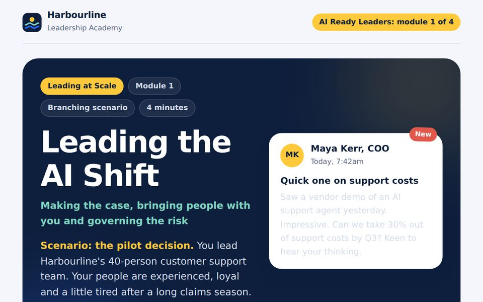
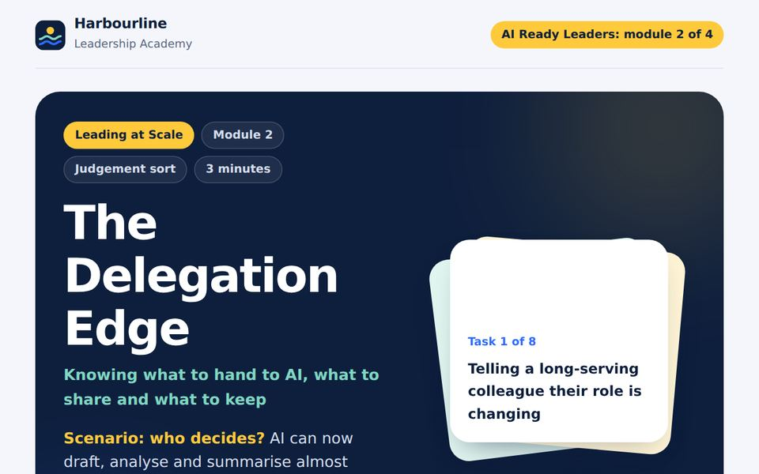
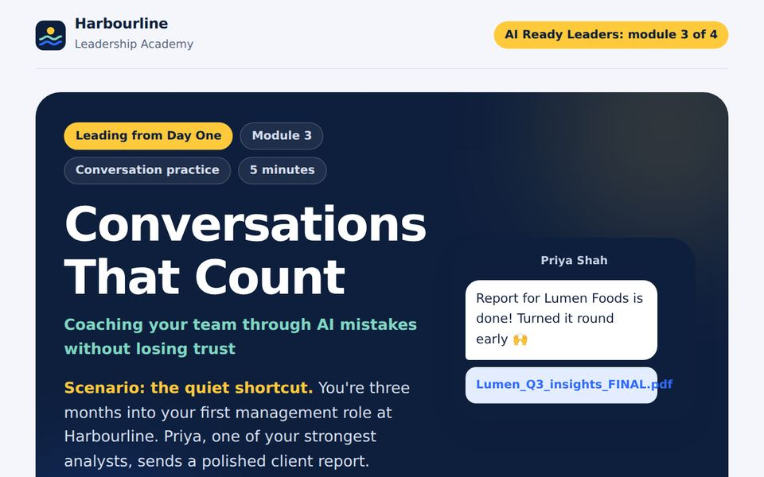
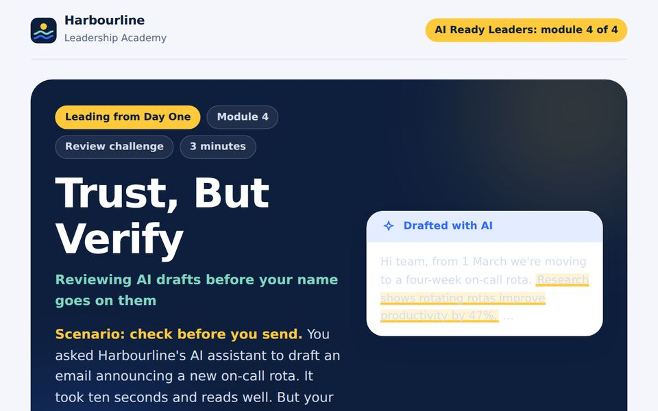

Four interactive modules that help leaders lead AI change with confidence: making the case, deciding what to hand to AI, coaching through AI mistakes and checking AI-drafted work.
Designed and built with AI as a development partner. Harbourline is a fictional company I created, so you can see how I'd tailor learning to a real client.

Module 1 Leading the AI Shift Your COO wants 30% cost savings from AI. Make three decisions that balance business value, your team's trust and risk.
Module 2 The Delegation Edge Sort eight leadership tasks: keep it human, let AI assist, or hand it to AI. Build a streak by matching expert calls.
Module 3 Conversations That Count Coach a strong analyst whose AI shortcut put client data at risk, without losing her trust.
Module 4 Trust, But Verify Review an AI-drafted email and catch the five problems before your name goes on it.